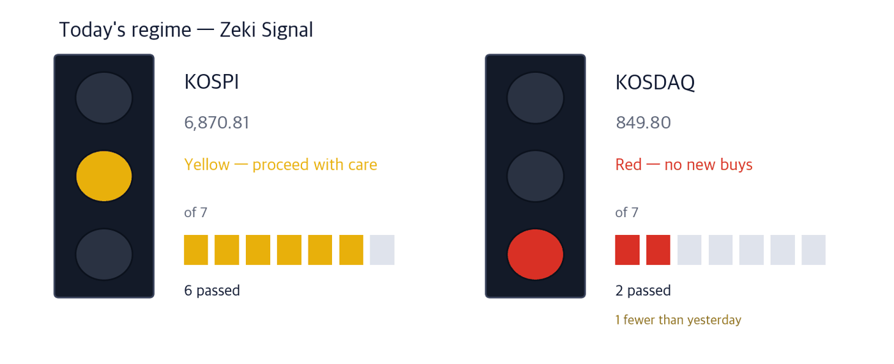

In New York on September 29 the S&P 500 fell 0.16% to 7,671.19, a second straight decline.
KOSPI 6,870.81 -0.27% | KOSDAQ 849.80 +0.38% | Zeki Signal Yellow |

Green favours buying, yellow says wait, red says hold off. The cells count how many of seven conditions are met - more cells mean the advance is broader. On the September 29 close the KOSPI meets 6 of 7 and shows Yellow. The KOSDAQ meets 2 and shows Red, one fewer than the day before.
Wait — the stance the signal implies.
The KOSPI fell on both sessions after the holiday: -2.70% on the 28th and -0.27% on the 29th, closing at 6,870.81. The KOSDAQ rose 0.38% on the 29th.
Beneath the index, money crowded into one sector. The KRX Semiconductor index, which tracks the chip sector, rose 3.83% on the 29th (Korea Economic Daily, Sep 30). DB HiTek gained 12.98% and Jusung Engineering (JEL) 7.45% the same day. It was also the day six Samsung affiliates said they would put KRW 1.4 trillion into a US AI infrastructure company.
Here is what to do now, before the Wednesday open in Seoul.
① Six Samsung affiliates will invest $1bn in US-based Helix. Samsung Electronics puts in half, $500m (Korea Economic Daily, Maeil Business, Sep 30). In the same current, Gaon Cable announced a US transmission-line investment and rose 5.53% on the 29th.
② The buyer of chip equipment and materials stocks was the fund-manager desk, not foreigners. Semiconductor ETFs rebalanced in early September and raised DB HiTek, Jusung Engineering and EO Technics (Korea Economic Daily, Sep 30). DB HiTek rose 51.1% over 20 sessions while foreigners were net sellers of 2,585,023 shares.
③ Defence headlines and defence prices disagree. Cumulative export contracts for five flagship weapons passed KRW 65 trillion (Korea Economic Daily, Sep 30). Yet Hanwha Aerospace fell 11.8% over 20 sessions, and all four defence names sit below zero on the trend gauge. The October 2 air-to-air missile award comes first.
Bank and card-company bonds maturing in the fourth quarter total KRW 89.5 trillion, 26.4% more than a year earlier. The five-year AAA bank bond yield is in the 4.6% range, the highest since October 2023. The more banks issue to refinance, the further mortgage rates may rise (Korea Economic Daily, Sep 30).
| Date | What to watch | What it changes |
|---|---|---|
| Fri, Oct 2 | Preferred bidder for the long-range air-to-air missile (Maeil Business, Sep 30) | A KRW 1.9 trillion programme; one side of Hanwha Aerospace vs Hyundai Rotem-LIG moves first |
| Mon, Oct 5 | Market closed (National Foundation Day substitute holiday) | Three days off after Friday; US moves in between reach Seoul at the October 6 open |
Samsung Electronics, Samsung C&T, Samsung SDS, Samsung SDI, Samsung Life and Samsung Fire will invest $1bn (about KRW 1.4 trillion) in Helix. KKR set up Helix in June to build data centres together with power generation, transmission and fibre networks. Nvidia and US utility Vistra are fellow founding investors (Korea Economic Daily, Sep 30).
More data centres need more wire to carry power. US utilities plan to spend $178bn on transmission in 2025–2028. On the 29th Gaon Cable announced an investment in overhead transmission-line capacity at its US unit (Maeil Business, Sep 30).
| Close | Day | Week | 20 sessions |
|---|---|---|---|
| KRW 315,000 | +5.53% | -2.17% | +54.41% |
| 3 months | Zeki Strength | From 1-yr high |
|---|---|---|
| +72.30% | 99 | -10.73% |
| Who | Gaon Cable, the LS Group cable maker. |
| What | Its US unit LSCUS will invest in overhead transmission-line capacity, widening a US business that had been in distribution. |
| When | It rose 5.53% on the day of the announcement, the 29th, to close at KRW 315,000. |
| Where | Listed on the KOSPI; average daily turnover about KRW 105.8 billion. |
| Why | US utilities have $178bn of transmission spending planned over four years. |
| How | Selling transmission line on top of distribution cable to the same US customers raises revenue per customer. |
| Close | Day | Week | 20 sessions |
|---|---|---|---|
| KRW 275,000 | +1.85% | +5.77% | +7.00% |
| 3 months | Zeki Strength | From 1-yr high |
|---|---|---|
| -19.00% | 92 | -26.57% |
| Who | Samsung Electronics, which puts up $500 million of the $1 billion Helix investment. |
| What | Over 20 sessions institutions were net buyers of 10,656,914 shares and foreigners net sellers of 16,220,800. |
| When | It rose 1.85% on the 29th, the day of the announcement. |
| Where | Listed on the KOSPI; average daily turnover about KRW 4,454.4 billion. |
| Why | A company that supplied chips to data centres can now sell cooling equipment too, through Germany’s FläktGroup, acquired last year. |
| How | Revenue from building whole data centres, not just parts, makes it less dependent on the chip cycle. |
While the KOSPI hovered around 7,000 through September, the fund-manager desk set prices. Three semiconductor ETFs hold KRW 8.33 trillion. In early September the ETFs raised five names — DB HiTek, EO Technics, Jusung Engineering, Samsung Electro-Mechanics and Hanmi Semiconductor — and cut Samsung Electronics and SK Hynix, which had gone past the 20% single-stock cap (Korea Economic Daily, Sep 30).
Foreigners sold KRW 160 billion of EO Technics on the KOSDAQ in September. Fund-manager desks absorbed it and the shares rose 25.63% in the month (Korea Economic Daily, Sep 30). As long as money flows into the ETFs, buying follows the index weights. When the inflow stops, it runs the other way.
| Close | Day | Week | 20 sessions |
|---|---|---|---|
| KRW 141,900 | +12.98% | +12.71% | +51.12% |
| 3 months | Zeki Strength | From 1-yr high |
|---|---|---|
| -10.36% | 90 | -38.44% |
| Who | DB HiTek, a contract chip manufacturer. |
| What | Of the five names the ETFs raised, it gained most in September, 47.98% (Korea Economic Daily, Sep 30). |
| When | It rose 12.98% on the 29th to KRW 141,900 on 2.1x its 50-day average volume. |
| Where | Listed on the KOSPI; average daily turnover about KRW 92.3 billion. |
| Why | Its larger weight in chip ETFs turns ETF inflows directly into buying of the stock. |
| How | Over 20 sessions institutions bought 1,923,069 shares and foreigners sold 2,585,023. One side is absorbing the other. |
| Close | Day | Week | 20 sessions |
|---|---|---|---|
| KRW 223,500 | +7.45% | +9.29% | +26.41% |
| 3 months | Zeki Strength | From 1-yr high |
|---|---|---|
| +34.96% | 99 | -21.02% |
| Who | JEL (Jusung Engineering), a maker of chip deposition equipment. |
| What | One of the names the chip ETFs raised sharply in early September (Korea Economic Daily, Sep 30). |
| When | It rose 7.45% on the 29th to KRW 223,500. |
| Where | Listed on the KOSDAQ; average daily turnover about KRW 197.7 billion. |
| Why | Its ETF weight rose, and its three-month gain is the highest of the three equipment names here. |
| How | Over 20 sessions both foreigners (399,819 shares) and institutions (731,842) were net buyers. |
| Close | Day | Week | 20 sessions |
|---|---|---|---|
| KRW 502,000 | +7.38% | +10.94% | +25.97% |
| 3 months | Zeki Strength | From 1-yr high |
|---|---|---|
| +3.51% | 84 | -19.42% |
| Who | EO Technics, a maker of semiconductor laser equipment. |
| What | Foreigners sold KRW 160bn of it on the KOSDAQ in September; fund-manager desks took it and the shares rose 25.63% (Korea Economic Daily, Sep 30). |
| When | It rose 7.38% on the 29th to KRW 502,000. |
| Where | Listed on the KOSDAQ; average daily turnover about KRW 39.3 billion. |
| Why | A higher ETF weight means ETF inflows become buying of this stock. |
| How | Over 20 sessions institutions bought 393,314 shares and foreigners sold 321,368. |
Cumulative export contracts for five flagship weapons — the K-9 howitzer, K-2 tank, Chunmoo, Cheongung-II and FA-50 — passed KRW 65 trillion, and makers are expanding at some 20 plants (Korea Economic Daily, Sep 30). On October 2 the preferred bidder for a KRW 1.9 trillion long-range air-to-air missile programme is due (Maeil Business, Sep 30).
Prices went the other way. Over 20 sessions: Hanwha Aerospace -11.8%, Hyundai Rotem -19.2%, LIG D&A -7.2%, Hanwha Systems -4.9%. All four are below zero on the trend gauge, and Hyundai Rotem is 60.1% below its one-year high. We watch whether the trend turns after the October 2 award.
One more left out for the same reason — Hanmi Semiconductor. The ETFs raised it and it rose 8.15% on the 29th, but it carries the highest short-interest ratio (Korea Economic Daily, Sep 30) and its trend gauge is still below zero (-0.21% of price).
| Name | ①up over 20 sessions | ②Strength 90+ | ③foreign net buy | ④institutional net buy | Met | Weight of evidence |
|---|---|---|---|---|---|---|
| Gaon Cable (000500) | O | O | O | O | 4/4 | Well grounded |
| Samsung (005930) | O | O | X | O | 3/4 | Grounded |
| DB HiTek (000990) | O | O | X | O | 3/4 | Grounded |
| JEL (036930) | O | O | O | O | 4/4 | Well grounded |
| EO Technics (039030) | O | X | X | O | 2/4 | Needs checking |
The four columns ask: ① up over 20 sessions? ② Zeki Strength 90 or higher? ③ foreigners net buyers over 20 sessions? ④ institutions net buyers over 20 sessions? The count of O sets the weight of evidence.
| Name | Foreign / Inst, 20d | Volume | How to read it |
|---|---|---|---|
| SFASemicon 036540 | F +12.4 · I -2.7 | 3.55x | Caution — Only foreigners bought; institutions sold |
| Posco International 047050 | F -1.7 · I +18.6 | 0.35x | Caution — Only institutions bought; foreigners sold |
| POSCO DX 022100 | F -1.0 · I +9.8 | 0.25x | Caution — Only institutions bought; foreigners sold |
| Korean Air Lines 003490 | F +9.8 · I +2.5 | 1.29x | Watch✓ — Foreigners and institutions both bought, on rising volume |
| Woori Financial Group 316140 | F +14.5 · I +2.8 | 0.55x | Check✓ — Both bought, but on thin volume |
| Daewoo Engineering & Construction 047040 | F -7.2 · I -4.5 | 1.37x | Caution — Both sides selling as volume rises |
| Doosan Enerbility 034020 | F -7.7 · I -0.9 | 0.94x | Wait — Both sides selling, but volume has dried up |
| LG Display 034220 | F -11.5 · I -0.2 | 0.70x | Wait — Both sides selling, but volume has dried up |
| SK Hynix 000660 | F -6.5 · I -0.6 | 0.62x | Wait — Both sides selling, but volume has dried up |
| Netmarble 251270 | F -11.2 · I -0.2 | 0.29x | Wait — Both sides selling, but volume has dried up |
| Stock | Net shares, 20 days | Zeki Strength | 20 trading days | As of |
|---|---|---|---|---|
| Woori Financial Group 316140 | +14,452,372 | 75 | +6.9% | 09-29 |
| SFASemicon 036540 | +12,359,578 | 94 | +91.3% | 09-29 |
| Korean Air Lines 003490 | +9,795,707 | 74 | +9.9% | 09-29 |
| Koh Young 098460 | +2,746,141 | 76 | +7.3% | 09-29 |
| HYUNDAI MOVEX 319400 | +2,433,388 | 76 | -13.7% | 09-29 |
| Stock | Net shares, 20 days | Zeki Strength | 20 trading days | As of |
|---|---|---|---|---|
| Samsung Electronics 005930 | -16,220,800 | 92 | +7.0% | 09-29 |
| LG Display 034220 | -11,494,535 | 8 | -13.6% | 09-29 |
| Netmarble 251270 | -11,216,130 | 12 | -7.6% | 09-29 |
| Doosan Enerbility 034020 | -7,690,103 | 48 | -8.7% | 09-29 |
| Daewoo Engineering & Construction 047040 | -7,182,434 | 96 | -10.4% | 09-29 |
| Stock | Net shares, 20 days | Zeki Strength | 20 trading days | As of |
|---|---|---|---|---|
| Posco International 047050 | +18,566,757 | 53 | +3.8% | 09-29 |
| Samsung Electronics 005930 | +10,656,914 | 92 | +7.0% | 09-29 |
| POSCO DX 022100 | +9,824,281 | 19 | -7.1% | 09-29 |
| Macquarie Korea Infrastructure 088980 | +5,030,401 | 25 | -0.8% | 09-29 |
| BNK Financial Group 138930 | +3,372,984 | 45 | +9.1% | 09-29 |
| Stock | Net shares, 20 days | Zeki Strength | 20 trading days | As of |
|---|---|---|---|---|
| Daewoo Engineering & Construction 047040 | -4,528,565 | 96 | -10.4% | 09-29 |
| Koh Young 098460 | -2,909,937 | 76 | +7.3% | 09-29 |
| SFASemicon 036540 | -2,671,838 | 94 | +91.3% | 09-29 |
| MIRAE ASSET SEC 006800 | -2,344,388 | 41 | -13.8% | 09-29 |
| YCC 232140 | -2,058,071 | 53 | +26.9% | 09-29 |
Even when the story and the price agree, we check the money separately. The table answers whether volume on the 29th actually cleared the bar — its 50-day average.
| Name | Cleared? | Flows (to Sep 29) | How to read it |
|---|---|---|---|
| Gaon Cable (000500) | 0.55x ✗ | F buy · I buy | Check — Both bought, but on thin volume |
| Samsung Electronics (005930) | 0.66x ✗ | F sell · I buy | Caution — Only institutions bought; foreigners sold |
| DB HiTek (000990) | 2.10x ✓ | F sell · I buy | Caution — Only institutions bought; foreigners sold |
| JEL (036930) | 0.77x ✗ | F buy · I buy | Check — Both bought, but on thin volume |
| EO Technics (039030) | 0.90x ✗ | F sell · I buy | Caution — Only institutions bought; foreigners sold |
"Cleared?" is volume on the 29th divided by its 50-day average; above 1x earns a ✓. The words describe what is happening, not our trades: Watch means price and volume agree, Caution means the two investor groups split or both sold, Check means both bought but trading was shallow, Wait means trading was thin.
| Weight of evidence | Names | Beat KOSPI | Winners led by | Losers trailed by | All averaged |
|---|---|---|---|---|---|
| Well grounded | 16 | 13 / 16 | +9.58%p | -4.53%p | +6.94%p |
| Grounded | 16 | 8 / 16 | +7.63%p | -4.90%p | +1.37%p |
| Needs checking | 35 | 17 / 35 | +5.82%p | -5.39%p | +0.05%p |
| Thin | 1 | 1 / 1 | +4.70%p | none | +4.70%p |
| No basis | 2 | 0 / 2 | none | -6.01%p | -6.01%p |
| Excluded | 1 | 1 / 1 | +9.09%p | none | +9.09%p |
| Well grounded 16 | +6.94%p | ||||||
| Grounded 16 | +1.37%p | ||||||
| Needs checking 35 | +0.05%p | ||||||
| Thin 1 | +4.70%p | ||||||
| No basis 2 | −6.01%p | ||||||
| Excluded 1 | +9.09%p |
The centre line is KOSPI. Right is ahead, left is behind. The grey number is how many names are in that band.
Of 16 Well grounded names, 13 beat KOSPI. Those 13 led by 9.6%p on average; the 3 that lost trailed by 4.5%p. All together: +6.9%p.
Toward the verdict. Across both markets, 24 of 60 cases have 5 trading days behind them. At 60 we run the test we fixed in advance, once, and print what it says. Until then the table above is interim.
| When | What to watch | What it means |
|---|---|---|
| First 30 minutes (09:00–09:30) | Does DB HiTek open above its Sep 29 close of KRW 141,900? | Shows whether the jump on the 29th fades in a day |
| 10:00 | Does the KOSPI hold 6,870.81? | The Sep 29 close; shows whether two weak days become three |
| Last 30 minutes (15:00–15:30) | Does Gaon Cable volume exceed its 50-day average of 265,428 shares? | If so, new money followed the expansion news |
When the air-to-air missile bidder is named on October 2, watch whether the defence trend turns; that is also the last session before a three-day break. For chip equipment names, check whether they hold the 29th’s gains for two sessions and whether fund-manager buying continues.
This is the Rex Way, ZekiRex™